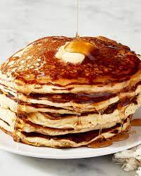

Pancakes

Description
The pancakes originated from France, but very popular in north america. Also known as Crepes - are simple meal from flower, milk, eggs, sugar, salt and baking powder.
Pancakes can be eaten as sweet dish or as a briny food.
Ingredients
- 120 g plain flour
- 2 tbsp sugar
- 1 large egg
- 2 teaspoon baking powder
- 240 ml milk
- pinch of salt
- 2 tbsp of oil
Steps
- Mix 120g self-raising flour, 2 tsp baking powder, 2 tbsp sugar and a pinch of salt together in a large bowl.
- Create a well in the centre with the back of your spoon then add 1 large egg, oil and 240 ml milk.
- Whisk together either with a balloon whisk or electric hand beaters until smooth then pour into a jug.
- Heat a small knob of butter and 1 tsp of oil in a large, non-stick frying pan over a medium heat. When the butter looks frothy, pour in rounds of the batter, approximately 8cm wide.
- Cook the pancakes on one side for about 1-2 mins or until lots of tiny bubbles start to appear and pop on the surface. Flip the pancakes over and cook for a further minute on the other side. Repeat until all the batter is used up.
- Serve your pancakes stacked up on a plate with a drizzle of maple syrup and any of your favourite toppings.
Back to Main Page